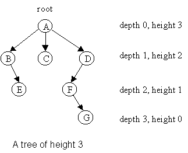

A tree is, at its simplest, an undirected graph (Graphs)
together with connectedness; or, there is exactly one simple path between every pair of vertices.
When we want to work with a hierarchy or genealogy, we pick out a distinguished vertex
The depth of a node
Nodes with no children are called leaves, and those with at least one child are internal nodes.
If, in addition, we impose a left‐to‐right ordering on each sibling set, we obtain an ordered (or plane) tree, where each node
When

Source
To process every node of a tree exactly once we use traversals, which produce a linear ordering of the nodes.
Depth-first traversals explore as far down one branch before backtracking. On a binary tree they come in three flavors:
For a binary‐tree node type
class Node:
def __init__(self, value, left=None, right=None):
self.value = value
self.left = left
self.right = right
the recursive code is:
def preorder(node, output):
if node is None:
return
output.append(node.value)
preorder(node.left, output)
preorder(node.right, output)
def inorder(node, output):
if node is None:
return
inorder(node.left, output)
output.append(node.value)
inorder(node.right, output)
def postorder(node, output):
if node is None:
return
postorder(node.left, output)
postorder(node.right, output)
output.append(node.value)
Each of these runs in
Breadth-first (or level-order) traversal visits nodes level by level, from the root down. It uses a queue:
from collections import deque
def level_order(root, output):
if root is None:
return
q = deque([root])
while q:
node = q.popleft()
output.append(node.value)
if node.left:
q.append(node.left)
if node.right:
q.append(node.right)
On a binary tree this enqueues node.left then node.right. The running time is
A binary tree over a set of keys
where
The size of a binary tree
The height
Nodes with no children are leaves; those with one or two children are internal.
A binary search tree (BST) is a binary tree whose keys come from a totally ordered set
If a node has key
, then every key in its left subtree is strictly less than , and every key in its right subtree is strictly greater than .
Formally, for every subtree
where
Because of this invariant, an in‐order traversal of a BST
traverse(L); visit(k); traverse(R);
visits the keys in ascending order. This property underlies search, insertion, and deletion operations: to locate a key
Once you have a binary search tree
To insert a key
def insert(T, x):
if T is None:
return Node(x)
if x < T.key:
T.left = insert(T.left, x)
elif x > T.key:
T.right = insert(T.right, x)
return T
where
If
To delete a key
def _max_node(T):
while T.right:
T = T.right
return T
def delete(T, x):
if T is None:
return None
if x < T.key:
T.left = delete(T.left, x)
elif x > T.key:
T.right = delete(T.right, x)
else:
if T.left is None:
return T.right
if T.right is None:
return T.left
y = _max_node(T.left)
T.key = y.key
T.left = delete(T.left, y.key)
return T
A
where
In the special case of a full
total nodes, and its height in terms of
A complete
and its parent (for
This indexing underlies the classic
More generally, a
By definition a binary heap of size
Completeness implies the tree’s height satisfies
so any root‐to‐leaf path has length
A complete binary tree can be stored in an array A[0…n−1] with no wasted slots. We number the nodes in breadth‐first order:
This arithmetic mapping enforces completeness automatically: inserting a new element appends it at A[n], and deleting the root replaces A[0] with the last element before shrinking.
Assume the following max-heap:
class MaxHeap:
def __init__(self):
self.A = []
def parent(self, i):
return (i - 1) // 2
def left(self, i):
return 2 * i + 1
def right(self, i):
return 2 * i + 2
To restore heap‐order after insertion or removal we percolate a single out‐of‐place element up or down the tree.
Insert a key A[n], then “sift‐up”. Each swap climbs one level; since at most
def insert(self, x):
self.A.append(x)
i = len(self.A) - 1
while i > 0 and self.A[self.parent(i)] < self.A[i]:
p = self.parent(i)
self.A[i], self.A[p] = self.A[p], self.A[i]
i = p
Extract‐max (in a max‐heap): remove the root
max := A[0].A[n−1] to A[0], decrement def extract_max(self):
n = len(self.A)
if n == 0:
raise IndexError("extract_max from empty heap")
maximum = self.A[0]
last = self.A.pop()
if n > 1:
self.A[0] = last
i = 0
n -= 1
while self.left(i) < n:
l = self.left(i)
r = self.right(i)
j = r if r < n and self.A[r] > self.A[l] else l
if self.A[j] > self.A[i]:
self.A[i], self.A[j] = self.A[j], self.A[i]
i = j
else:
break
return maximum
Swapping downward also takes at most
Surprisingly, turning an arbitrary array into a heap takes
for i = ⌊n/2⌋−1 downto 0 do
sift-down(A, i, n)
end
Nodes at depth
since
def heapify(arr, n, i):
while True:
largest = i
left = 2*i + 1
right = 2*i + 2
if left < n and arr[left] > arr[largest]:
largest = left
if right < n and arr[right] > arr[largest]:
largest = right
if largest == i:
break
arr[i], arr[largest] = arr[largest], arr[i]
i = largest
def build_max_heap(arr):
n = len(arr)
for i in range(n//2 - 1, -1, -1):
heapify(arr, n, i)
Heap operations enable in‐place sorting in
A[0] (max) with A[n−1], decrement After each extract, the suffix A[n…end] is sorted in ascending order.
def heap_sort(arr):
n = len(arr)
build_max_heap(arr)
for i in range(n-1, 0, -1):
arr[0], arr[i] = arr[i], arr[0]
heapify(arr, i, 0)
return arr
A
Because completeness pins down the shape, a
Store the heap in an array A[0…n−1] so that for each index
This implicit structure requires no pointers, maximises spatial locality, and makes traversals extremely cache-friendly when
def push(A, n, x, d):
A.append(x)
i = n
while i > 0:
p = (i - 1) // d
if A[p] < A[i]:
A[p], A[i] = A[i], A[p]
i = p
else:
break
return n + 1
Each iteration moves one level up; the worst-case number of swaps is
def pop(A, n, d):
if n == 0:
raise IndexError("pop from empty heap")
maximum = A[0]
A[0] = A[n-1]
A.pop()
n -= 1
i = 0
while True:
best = i
for k in range(1, d+1):
c = d*i + k
if c < n and A[c] > A[best]:
best = c
if best == i:
break
A[i], A[best] = A[best], A[i]
i = best
return maximum, n
At each of
To heapify an arbitrary array A[0…n−1], perform sift-down on every non-leaf index from
Since there are at most
because
Suppose you need a priority queue on an embedded system where cache locality matters. A 4-ary heap (each node has up to four children) can reduce height compared to a binary heap, trading off a slightly more expensive per-node “sift” for fewer levels.
We store the heap in a zero-based array A[0…n−1]. For a 4-ary heap the children of node at index
and the parent of node
This yields a height
so operations cost
push)To insert a key x:
x at A[n]; increment n. i = n-1:i > 0 and A[i] < A[parent(i)]:def push_min(A, n, x):
A.append(x)
n += 1
i = n - 1
while i > 0:
p = (i - 1) // 4
if A[i] < A[p]:
A[i], A[p] = A[p], A[i]
i = p
else:
break
return n
Each swap moves you one level up; in the worst case you move
pop_min)To remove the minimum (root A[0]):
A[0] with A[n-1]; decrement n.i = 0:def pop_min(A, n):
if n == 0:
raise IndexError("pop from empty heap")
minimum = A[0]
A[0] = A[n - 1]
A.pop()
n -= 1
i = 0
while True:
best = i
for j in range(1, 5):
c = 4 * i + j
if c < n and A[c] < A[best]:
best = c
if best == i:
break
A[i], A[best] = A[best], A[i]
i = best
return minimum, n
Each loop moves you one level down at cost
Start with an empty heap; insert the sequence
[7, 3, 10, 1, 5, 2, 8, 4, 6]
Insert 7 → [7]
Insert 3 → [3,7] (sift up swaps 3↔7)
Insert 10 → [3,7,10] (no sift)
Insert 1 → [1,3,10,7] (1→index 3, parent=0, swap 1↔3, then 1↔root)
Insert 5 → [1,3,5,7,10] (5→index 4, parent=0, no swap)
Insert 2 → [1,2,5,7,10,3] (2→5, parent=1, swap)
Insert 8 → [1,2,5,7,10,3,8]
Insert 4 → [1,2,4,7,10,3,8,5] (4→7, parent=1, swap)
Insert 6 → [1,2,4,6,10,3,8,5,7]
After these nine insertions the array is
Index: 0 1 2 3 4 5 6 7 8
Value: [1,2,4,6,10,3,8,5,7]
and the implicit 4-ary tree has height
Because each sift-up or sift-down step does up to
Total comparisons per operation:
In practice the 4-ary heap often wins due to better cache behavior: its nodes are more compact, and sifts touch fewer distinct cache lines.
Because the 4 children of node
size_t parent(size_t i) { return (i - 1) >> 2; }
void sift_down(int A[], size_t n) {
size_t i = 0;
while (1) {
size_t best = i;
for (size_t j = 1; j <= 4; ++j) {
size_t c = 4*i + j;
if (c < n && A[c] < A[best]) best = c;
}
if (best == i) break;
int tmp = A[i]; A[i] = A[best]; A[best] = tmp;
i = best;
}
}
A segment tree is a binary‐tree data structure built on an underlying array
Range queries and point or range updates are the two fundamental operations supported by segment‐tree–style data structures on an underlying array
A range query on
i.e.\ the
A point update at position
A range update over
In the above, the two key operations—combine and update—must satisfy certain algebraic properties to make segment‐tree algorithms correct and efficient:
If
such that applying two updates in sequence equals a single composed update:
These conditions make
| Scenario | |||||||
|---|---|---|---|---|---|---|---|
| Point‐assign, range‐sum | |||||||
| Point‐increment, range‐sum | |||||||
| Range‐assign, range‐min |
The tree is defined recursively:
Assume the following constructor:
class SegmentTree:
def __init__(self, A, combine, identity):
self.n = len(A)
self.combine = combine
self.identity = identity
self.seg = [identity] * (4 * self.n)
self._build(1, 0, self.n - 1, A)
In an array‐based implementation you typically allocate an array seg[1..4*n], then:
def _build(self, i, L, R, A):
if L == R:
self.seg[i] = A[L]
else:
M = (L + R) // 2
self._build(2*i, L, M, A)
self._build(2*i+1, M+1, R, A)
self.seg[i] = self.combine(self.seg[2*i], self.seg[2*i+1])
Here combine(x,y) is the associative operation you need (e.g.\ $x+y$ for range sum, min(x,y) for range minimum, etc.). Building the entire tree takes
since the tree has
To query the aggregate over an arbitrary subinterval
def query(self, ql, qr):
return self._query(1, 0, self.n - 1, ql, qr)
def _query(self, i, L, R, ql, qr):
if qr < L or R < ql:
return self.identity
if ql <= L and R <= qr:
return self.seg[i]
M = (L + R) // 2
left = self._query(2*i, L, M, ql, qr)
right = self._query(2*i+1, M+1, R, ql, qr)
return self.combine(left, right)
Each level of recursion splits the interval in two, and you visit at most two nodes per level, so query runs in
To update a single element seg[i]=v, then propagate the change upward:
def update(self, p, v):
self._update(1, 0, self.n - 1, p, v)
def _update(self, i, L, R, p, v):
if L == R:
self.seg[i] = v
else:
M = (L + R) // 2
if p <= M:
self._update(2*i, L, M, p, v)
else:
self._update(2*i+1, M+1, R, p, v)
self.seg[i] = self.combine(self.seg[2*i], self.seg[2*i+1])
Again this touches one node per level, giving
A lazy segment tree can be defined as:
class LazySegmentTree:
def __init__(self, A, combine, apply, combine_lazy, identity, identity_lazy):
self.n = len(A)
self.combine = combine
self.apply = apply
self.combine_lazy = combine_lazy
self.identity = identity
self.identity_lazy = identity_lazy
self.seg = [identity] * (4 * self.n)
self.lazy = [identity_lazy] * (4 * self.n)
self._build(1, 0, self.n - 1, A)
For range updates (e.g. “add lazy[1..4*n] that accumulates pending updates, you can achieve both range updates and range queries in
i carries a lazy[i] value meaning “this entire segment needs to be incremented by lazy[i],” applied to seg[i] when you visit it.push(i,L,R) before recursing, ensuring the segment’s value is up-to-date. def _build(self, i, L, R, A):
if L == R:
self.seg[i] = A[L]
else:
M = (L + R) // 2
self._build(2*i, L, M, A)
self._build(2*i+1, M+1, R, A)
self.seg[i] = self.combine(self.seg[2*i], self.seg[2*i+1])
def _push(self, i, L, R):
if self.lazy[i] != self.identity_lazy:
self.seg[i] = self.apply(self.seg[i], self.lazy[i], R - L + 1)
if L < R:
self.lazy[2*i] = self.combine_lazy(self.lazy[2*i], self.lazy[i])
self.lazy[2*i+1] = self.combine_lazy(self.lazy[2*i+1], self.lazy[i])
self.lazy[i] = self.identity_lazy
def update_range(self, ql, qr, v):
self._update_range(1, 0, self.n - 1, ql, qr, v)
def _update_range(self, i, L, R, ql, qr, v):
self._push(i, L, R)
if qr < L or R < ql:
return
if ql <= L and R <= qr:
self.lazy[i] = self.combine_lazy(self.lazy[i], v)
self._push(i, L, R)
else:
M = (L + R) // 2
self._update_range(2*i, L, M, ql, qr, v)
self._update_range(2*i+1, M+1, R, ql, qr, v)
self.seg[i] = self.combine(self.seg[2*i], self.seg[2*i+1])
def query_range(self, ql, qr):
return self._query_range(1, 0, self.n - 1, ql, qr)
def _query_range(self, i, L, R, ql, qr):
self._push(i, L, R)
if qr < L or R < ql:
return self.identity
if ql <= L and R <= qr:
return self.seg[i]
M = (L + R) // 2
left = self._query_range(2*i, L, M, ql, qr)
right = self._query_range(2*i+1, M+1, R, ql, qr)
return self.combine(left, right)
Imagine you’re building a real‐time dashboard for daily sales over a month. You maintain an array
of length
And do both in
We build a complete binary tree over
sum: the current value of add: a lazy tag meaning “every element in Leaf nodes at sum=A[L] and add=0. Internal nodes combine:
#include <bits/stdc++.h>
using namespace std;
class SegTree {
private:
int n;
vector<long long> sum, lazy;
// Build tree from initial array A
void build(int i, int L, int R, const vector<long long>& A) {
if (L == R) {
sum[i] = A[L];
} else {
int M = (L + R) >> 1;
build(2*i, L, M, A);
build(2*i + 1, M+1, R, A);
sum[i] = sum[2*i] + sum[2*i + 1];
}
}
// Push pending updates at node i down to children
void push(int i, int L, int R) {
if (lazy[i] != 0) {
long long v = lazy[i];
sum[i] += v * (R - L + 1);
if (L < R) {
lazy[2*i] += v;
lazy[2*i + 1] += v;
}
lazy[i] = 0;
}
}
// Internal range‐add
void update(int i, int L, int R, int ql, int qr, long long v) {
push(i, L, R);
if (qr < L || R < ql) return; // no overlap
if (ql <= L && R <= qr) { // full cover
lazy[i] += v;
push(i, L, R);
return;
}
int M = (L + R) >> 1;
update(2*i, L, M, ql, qr, v);
update(2*i + 1, M+1, R, ql, qr, v);
sum[i] = sum[2*i] + sum[2*i + 1];
}
// Internal range‐sum query
long long query(int i, int L, int R, int ql, int qr) {
push(i, L, R);
if (qr < L || R < ql) return 0; // identity = 0
if (ql <= L && R <= qr) return sum[i];
int M = (L + R) >> 1;
return query(2*i, L, M, ql, qr)
+ query(2*i + 1, M+1, R, ql, qr);
}
public:
// Constructor: pass size and initial array
SegTree(int _n, const vector<long long>& A) {
n = _n;
sum.assign(4*n, 0);
lazy.assign(4*n, 0);
build(1, 0, n-1, A);
}
// Public wrappers
void update(int ql, int qr, long long v) {
update(1, 0, n-1, ql, qr, v);
}
long long query(int ql, int qr) {
return query(1, 0, n-1, ql, qr);
}
};
// Example usage
int main() {
ios::sync_with_stdio(false);
cin.tie(nullptr);
// Sample array
vector<long long> A = {1, 2, 3, 4, 5};
SegTree st((int)A.size(), A);
// Query sum of A[1..3]
cout << "Sum [1..3] = " << st.query(1, 3) << "\n"; // → 2+3+4 = 9
// Add +5 to A[2..4]
st.update(2, 4, 5);
// Now A = {1,2,8,9,10}; query sum of A[3..4]
cout << "Sum [3..4] = " << st.query(3, 4) << "\n"; // → 9+10 = 19
return 0;
}
Let initially
sum = child sums.update(2,5,10)):
lazy+=10 and push:
sum by lazy+=10 (deferred).sum = left.sum + right.sum.(query(3,7)):
sum.After the update, the new
A Fenwick tree, or Binary Indexed Tree (BIT), is a space- and time-efficient structure for maintaining a dynamic array
class FenwickTree:
def __init__(self, n):
self.n = n
self.BIT = [0] * (n + 1)
def build(self, A):
for i, v in enumerate(A, start=1):
self.update(i, v)
At the heart of the BIT is the function
which extracts the least significant
in the original array. We store in BIT[i] the cumulative sum of exactly that block:
Because these blocks partition every prefix
To add a value
def update(self, p, delta):
i = p
while i <= self.n:
self.BIT[i] += delta
i += i & -i
Each increment clears the lowest set bit of the “complement” of
To compute
we accumulate the pre-computed blocks by walking “down”:
def query(self, p):
s = 0
i = p
while i > 0:
s += self.BIT[i]
i -= i & -i
return s
Each step removes the lowest set bit from
A 2D Fenwick tree (or 2D BIT) generalises the 1D BIT to maintain an
time, using only
Fenwick’s insight is that each entry
where
extracts the least significant
class Fenwick2D:
def __init__(self, n, m):
self.n = n
self.m = m
self.BIT = [[0] * (m + 1) for _ in range(n + 1)]
def _lowbit(self, x):
return x & -x
To add
def update(self, p, q, delta):
i = p
while i <= self.n:
j = q
while j <= self.m:
self.BIT[i][j] += delta
j += self._lowbit(j)
i += self._lowbit(i)
To compute
def range_sum(self, x1, y1, x2, y2):
return (
self.query(x2, y2)
- self.query(x1 - 1, y2)
- self.query(x2, y1 - 1)
+ self.query(x1 - 1, y1 - 1)
)
def query(self, p, q):
result = 0
i = p
while i > 0:
j = q
while j > 0:
result += self.BIT[i][j]
j -= self._lowbit(j)
i -= self._lowbit(i)
return result
Each subtraction clears one
For an arbitrary rectangle
invoking four prefix queries in
Suppose you need to maintain a multiset of integers in the range
We maintain an array BIT[1..N], initially all zeros. At any time
where
int s = 0;
for(int i = p; i > 0; i -= i&-i)
s += BIT[i];
return s;
for(int i = p; i <= N; i += i&-i)
BIT[i] += Δ;
Since each loop changes one bit of
We want the smallest
We can do this by a binary-lifting trick over the Fenwick tree in
// find smallest x with prefix_sum(x) >= k
int find_by_order(int k) {
int pos = 0;
// Assume N <= 2^LOG; pick LOG so that (1<<LOG) >= N
for(int pw = 1<<LOG; pw > 0; pw >>= 1) {
if(pos + pw <= N && BIT[pos + pw] < k) {
k -= BIT[pos + pw];
pos += pw;
}
}
return pos + 1;
}
At each step we test whether jumping by pw stays below pos forward. After pos+1 is the desired element.
#include <bits/stdc++.h>
using namespace std;
struct Fenwick {
int N;
vector<int> BIT;
Fenwick(int _N): N(_N), BIT(N+1, 0) {}
// add Δ (+1 for insert, -1 for delete) at position p
void update(int p, int Δ) {
for(int i = p; i <= N; i += i & -i)
BIT[i] += Δ;
}
// sum of f[1..p]
int prefix_sum(int p) {
int s = 0;
for(int i = p; i > 0; i -= i & -i)
s += BIT[i];
return s;
}
// find smallest x with prefix_sum(x) >= k
int find_by_order(int k) {
int pos = 0;
for(int pw = 1 << (31 - __builtin_clz(N)); pw > 0; pw >>= 1) {
if(pos + pw <= N && BIT[pos + pw] < k) {
k -= BIT[pos + pw];
pos += pw;
}
}
return pos + 1;
}
};
int main(){
ios::sync_with_stdio(false);
cin.tie(NULL);
int N = 1000000; // universe size
Fenwick fw(N);
int Q; // number of operations
cin >> Q;
while(Q--){
char op;
int x;
cin >> op >> x;
if(op == 'I'){ // insert x
fw.update(x, +1);
} else if(op == 'D'){ // delete x
if(fw.prefix_sum(x) - fw.prefix_sum(x-1) > 0)
fw.update(x, -1);
} else if(op == 'K'){ // find k-th smallest
if(x < 1 || x > fw.prefix_sum(N)){
cout << "invalid\n";
} else {
cout << fw.find_by_order(x) << "\n";
}
}
}
return 0;
}
update(x, +1)x, do update(x, -1)Let
Let
class Node:
def __init__(self, start=None, end=None):
self.children = {} # dict: char -> Node
self.suffix_link = None # suffix link
self.start = start # edge start index
self.end = end # edge end index reference (mutable for leaves)
class SuffixTree:
def __init__(self, text):
self.text = text
self.n = len(text)
self.root = Node()
self.root.suffix_link = self.root
self.active_node = self.root
self.active_edge = -1
self.active_length = 0
self.remaining = 0
self.leaf_end = -1
self.last_new_node = None
self.build()
Ukkonen processes the text
Three invariants drive the procedure:
def _edge_length(self, node):
return node.end[0] - node.start + 1
def _walk_down(self, node):
if self.active_length >= self._edge_length(node):
self.active_edge += self._edge_length(node)
self.active_length -= self._edge_length(node)
self.active_node = node
return True
return False
def _extend(self, pos):
self.leaf_end[0] = pos
self.remaining += 1
self.last_new_node = None
while self.remaining > 0:
if self.active_length == 0:
self.active_edge = pos
ch = self.text[self.active_edge]
if ch not in self.active_node.children:
leaf = Node(pos, self.leaf_end)
self.active_node.children[ch] = leaf
if self.last_new_node:
self.last_new_node.suffix_link = self.active_node
self.last_new_node = None
else:
next_node = self.active_node.children[ch]
if self._walk_down(next_node):
continue
if self.text[next_node.start + self.active_length] == self.text[pos]:
self.active_length += 1
if self.last_new_node:
self.last_new_node.suffix_link = self.active_node
self.last_new_node = None
break
split_end = next_node.start + self.active_length - 1
split = Node(next_node.start, [split_end])
self.active_node.children[ch] = split
leaf = Node(pos, self.leaf_end)
split.children[self.text[pos]] = leaf
next_node.start += self.active_length
split.children[self.text[next_node.start]] = next_node
if self.last_new_node:
self.last_new_node.suffix_link = split
self.last_new_node = split
split.suffix_link = self.root
self.remaining -= 1
if self.active_node == self.root and self.active_length > 0:
self.active_length -= 1
self.active_edge = pos - self.remaining + 1
else:
self.active_node = self.active_node.suffix_link or self.root
def build(self):
for i in range(self.n):
self._extend(i)
Once you have built the suffix tree for a text
Augment each node
You compute this by a single post‐order DFS in
def compute_counts(self):
def dfs(v):
if not v.children:
v.count = 1
else:
total = 0
for child in v.children.values():
total += dfs(child)
v.count = total
return v.count
dfs(self.root)
After this, each internal node knows how many suffixes pass through it, i.e. how many occurrences of its path‐label appear in
To count occurrences of
def count_occurrences(self, P):
v = self.root
i, m = 0, len(P)
while i < m:
c = P[i]
if c not in v.children:
return 0
w = v.children[c]
length = w.end[0] - w.start + 1
segment = self.text[w.start:w.start+length]
if P[i:i+length] != segment:
return 0
i += length
v = w
return v.count
length character checks, but across the descent you compare exactly get_edge and one dest lookup per edge, so the overall time is Given a suffix tree built over the text \$), the locate query—
“Return all starting positions of the pattern
in ”
—can be implemented in
We follow exactly the characters of
def find_locus(root, S, P):
node = root
i = 0
while i < len(P):
c = P[i]
if c not in node.children:
return None, 0 # no such edge: pattern absent
edge = node.children[c]
length = edge.end - edge.start + 1
# Match up to `length` characters on this edge
j = 0
while j < length and i < len(P):
if S[edge.start + j] != P[i]:
return None, 0 # mismatch: pattern absent
i += 1
j += 1
if j < length:
# Pattern ended in the middle of this edge
return edge.dest, 0 # we treat the dest as the locus
# else: we consumed the entire edge, move to its dest
node = edge.dest
return node, 0
Once we have the locus node v, every leaf in its subtree corresponds to one occurrence starting at position leaf.pos. Two approaches:
def collect_leaves(v, out):
if not v.children:
out.append(v.leaf_pos)
return
for edge in v.children.values():
collect_leaves(edge.dest, out)
def locate(root, S, P):
v, _ = find_locus(root, S, P)
if v is None:
return [] # no occurrences
out = []
collect_leaves(v, out)
return sorted(out) # optional if you need positions in order
# After building the tree, run:
def annotate_leaves(v):
if not v.children:
v.leaf_list = [v.leaf_pos]
else:
v.leaf_list = []
for e in v.children.values():
annotate_leaves(e.dest)
v.leaf_list.extend(e.dest.leaf_list)
# Then locate is trivial:
def locate(root, S, P):
v, _ = find_locus(root, S, P)
return v.leaf_list[:] if v else []
Storing leaf_list at each node costs
Let
root follow edge ’a’ → match “a” (v exactly at the end of pattern, after matching 3 chars.v has two leaves with leaf_pos=2 and leaf_pos=4.Hence locate returns [2,4], the correct starting indices of “ana” in “banana”.
In a rooted tree
A naïve way to compute
To speed queries to
Filling this table takes
we set
After this loop,
For truly constant‐time queries one exploits the equivalence between LCA and a range‐minimum query (RMQ) on an Euler tour of the tree. Performing a DFS from
Building a linear‐time RMQ structure on
Consider the rooted tree with root
Depths from the root are
We will preprocess and answer the queries:
# Binary lifting LCA implementation on the example tree
n = 9 # number of nodes
LOG = (n-1).bit_length() # maximum power-of-two needed
# adjacency list
adj = [[] for _ in range(n+1)]
edges = [(1,2),(1,3),(2,4),(2,5),(3,6),(3,7),(6,8),(6,9)]
for u, v in edges:
adj[u].append(v)
adj[v].append(u)
# parent and depth arrays
parent = [0]*(n+1)
depth = [0]*(n+1)
def dfs(u, p):
for v in adj[u]:
if v == p:
continue
parent[v] = u
depth[v] = depth[u] + 1
dfs(v, u)
# build parent and depth starting from root = 1
root = 1
parent[root] = root
depth[root] = 0
dfs(root, 0)
# build binary lifting table up[k][v] = 2^k-th ancestor of v
up = [[0]*(n+1) for _ in range(LOG)]
up[0] = parent[:] # 2^0 = 1-step ancestor
for k in range(1, LOG):
for v in range(1, n+1):
up[k][v] = up[k-1][up[k-1][v]]
def lca(u, v):
if depth[u] < depth[v]:
u, v = v, u
# lift u up to depth of v
diff = depth[u] - depth[v]
for k in range(LOG):
if diff >> k & 1:
u = up[k][u]
if u == v:
return u
# lift both until parents differ
for k in reversed(range(LOG)):
if up[k][u] != up[k][v]:
u = up[k][u]
v = up[k][v]
return parent[u]
# example queries
queries = [(4,5), (4,6), (8,9), (5,9)]
for u, v in queries:
print(f"LCA({u},{v}) = {lca(u,v)}")
Expected output:
LCA(4,5) = 2
LCA(4,6) = 1
LCA(8,9) = 6
LCA(5,9) = 1
When you need to answer queries or perform updates on paths or subtrees of a tree in logarithmic time, two powerful techniques are centroid decomposition and heavy–light decomposition. They both build a hierarchy over the original tree that guarantees any root‐to‐leaf path is broken into only
A centroid of a tree
Because each removal cuts component sizes in half, the centroid tree has height
Heavy–Light Decomposition partitions
Because every time you follow a light edge you move into a subtree of size at most half, any path from root to leaf uses at most
To perform a query or update along the path between two nodes
A single path operation costs
Both centroid decomposition and heavy–light decomposition transform global tree queries into
We want to support two operations on a tree with
Using Heavy–Light Decomposition (HLD), each path breaks into at most
#include <bits/stdc++.h>
using namespace std;
const int MAXN = 100000;
vector<int> adj[MAXN+1];
int parent[MAXN+1], depth[MAXN+1], heavy[MAXN+1];
int head[MAXN+1], pos[MAXN+1], subtreeSize[MAXN+1];
int curPos;
long long baseVal[MAXN+1]; // values remapped by pos[]
struct SegmentTree {
int n;
vector<long long> st;
SegmentTree(int _n): n(_n), st(4*_n,0) {}
void build(int p,int l,int r) {
if (l==r) { st[p]=baseVal[l]; return; }
int m=(l+r)/2;
build(p<<1, l, m);
build(p<<1|1, m+1, r);
st[p]=st[p<<1]+st[p<<1|1];
}
void update(int p,int l,int r,int idx,long long x) {
if (l==r) { st[p]=x; return; }
int m=(l+r)/2;
if (idx<=m) update(p<<1, l, m, idx, x);
else update(p<<1|1, m+1, r, idx, x);
st[p]=st[p<<1]+st[p<<1|1];
}
long long query(int p,int l,int r,int L,int R) {
if (R<l || r<L) return 0;
if (L<=l && r<=R) return st[p];
int m=(l+r)/2;
return query(p<<1, l, m, L, R)
+ query(p<<1|1, m+1, r, L, R);
}
};
int dfs(int v,int p){
parent[v]=p; depth[v]=(p?depth[p]+1:0);
subtreeSize[v]=1;
int maxSub=0;
heavy[v]=-1;
for(int u: adj[v]) if(u!=p){
int sz=dfs(u,v);
if(sz>maxSub){
maxSub=sz;
heavy[v]=u; // heavy child has max subtree size
}
subtreeSize[v]+=sz;
}
return subtreeSize[v];
}
void decompose(int v,int h){
head[v]=h;
pos[v]=++curPos; // assign $$\text{pos}[v]\in[1,n]$$
baseVal[curPos]= /* initial value of node v */;
if(heavy[v]!=-1)
decompose(heavy[v], h); // continue the chain
for(int u: adj[v]) if(u!=parent[v] && u!=heavy[v]){
decompose(u, u); // new chain at each light edge
}
}
long long queryPath(int a,int b, SegmentTree &st){
long long res=0;
while(head[a]!=head[b]){
if(depth[head[a]]<depth[head[b]])
swap(a,b);
// query the segment [pos(head[a]), pos(a)]
res += st.query(1,1,curPos, pos[head[a]], pos[a]);
a = parent[head[a]];
}
// now same chain: query [min(pos(a),pos(b)), max(...)]
if(depth[a]>depth[b]) swap(a,b);
res += st.query(1,1,curPos, pos[a], pos[b]);
return res;
}
void updateNode(int v,long long x, SegmentTree &st){
st.update(1,1,curPos, pos[v], x);
}
int main(){
ios::sync_with_stdio(false);
cin.tie(nullptr);
int n,q;
cin>>n>>q;
for(int i=1;i<n;i++){
int u,v; cin>>u>>v;
adj[u].push_back(v);
adj[v].push_back(u);
}
// Read initial values
vector<long long> init(n+1);
for(int i=1;i<=n;i++) cin>>init[i];
dfs(1,0);
curPos=0;
decompose(1,1);
// Move init[] into baseVal by pos[]
for(int v=1;v<=n;v++)
baseVal[pos[v]] = init[v];
SegmentTree st(n);
st.build(1,1,n);
while(q--){
char type; cin>>type;
if(type=='U'){ // update: U v x
int v; long long x; cin>>v>>x;
updateNode(v,x,st);
} else { // query: Q u v
int u,v; cin>>u>>v;
cout<<queryPath(u,v,st)<<"\n";
}
}
return 0;
}